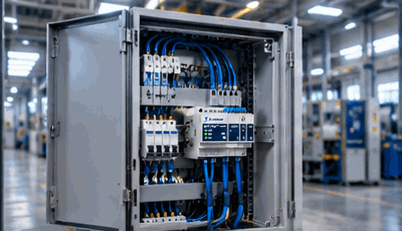
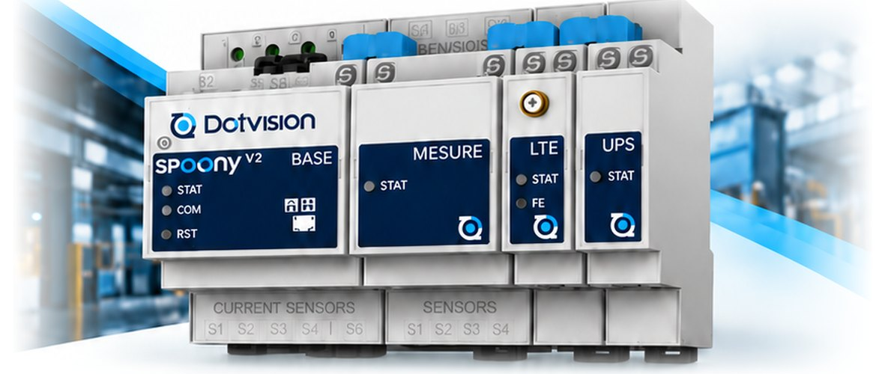

Rendre chaque équipement communicant
Un sous-compteur posé en quelques dizaines de minutes, des données à la seconde pour suivre les moyens de production, et des protocoles standards pour s'intégrer à l'existant.
Spoony · Aloha
Voir les 9 secteursSpoony 2.0 mesure chaque départ électrique, repère les dérives et les micro-coupures, et rend la donnée à l'exploitant. Aucun capteur sur la machine.

Chaque thème ouvre son animation : l'application Spoony 2.0 sur un site type, avec ses départs, ses alertes et ses indicateurs.
Poussière, chaleur, lavage haute pression, pompes immergées : la mesure reste dans l'armoire. Chaque fiche ouvre son animation et sa plaquette.
Le site présente DotVision par domaine d'application. La démonstration reprend les trois domaines où Spoony mesure, et signale celui où la gamme répond par d'autres produits.
Un sous-compteur posé en quelques dizaines de minutes, des données à la seconde pour suivre les moyens de production, et des protocoles standards pour s'intégrer à l'existant.
L'efficacité énergétique des bâtiments, des villes et des transports passe par de nouveaux moyens de suivi, de pilotage et d'optimisation, jusqu'aux réseaux d'énergie intelligents.
Énergie des trains et des infrastructures, température et humidité en wagon, détection d'arcs sur ligne aérienne, géolocalisation du matériel, supervision de la recharge électrique.
Solutions dédiées aux forces de l'ordre et d'intervention, et à la sécurisation de grands sites sensibles. Ce domaine ne repose pas sur Spoony.
Source : rubrique Solutions de dotvision.com, consultée le 22-11-2026.
Le différenciateur tient au coût de déploiement et à la densité de mesure. L'analyse de signature électrique existe depuis les années 1990 : Spoony la rend posable partout.
Rail DIN 3/2, monophasé ou triphasé. Les compteurs existants remontent par Modbus ou LoRa, sans remplacement.
Alarmes, tâches et scripts programmables. Dérives, marches à vide et micro-coupures repérées sur place.
EMS, SCADA ou MES par Modbus, MQTT(S), FTP(S), HTTP(S). Ethernet, WiFi, LTE ou LoRa.
L'IA recommande, l'automate commande, l'opérateur valide. La consigne ne quitte jamais la régulation.
Source : page Spoony 2.0 de dotvision.com, consultée le 22-11-2026. Le site qualifie son image de non contractuelle.
Spoony s'appuie sur trois briques logicielles de DotVision, de l'intelligence embarquée à la plateforme de gestion de parc.
Décentraliser l'intelligence vers les objets pour ne remonter que la donnée utile.
Système d'exploitation temps réel pour objets connectés, programmable en JavaScript, C ou C++.
Gestion de parc et dialogue bidirectionnel avec le cloud, en nuage ou sur site : courtier MQTT et HTTPS, séries temporelles, alarmes.
Mono ou triphasé, pinces ouvrantes, passerelle Modbus, format rail DIN 3/2.

Sous-comptage modulaireBoîtier modulaire : base, mesure, LTE, UPS. Objet de cette démonstration.
Acquisition de signaux variés, commande par IA ou à distance. 110 x 91 x 45 mm, pensée pour le matériel roulant.
Passerelle pour matériel roulant et installations électriques. 156 x 122 x 91 mm.
Détecteur portable de composés organiques volatils, destiné aux forces de l'ordre.
Sources : pages produits de dotvision.com, consultées le 22-11-2026. Les dimensions sont celles publiées par le site.
Deux offres complètent le produit : un laboratoire pour concevoir, une usine pour assembler.
Une équipe qui réunit matériel et logiciel conçoit des objets connectés, de la preuve de concept au produit industriel, sur des briques ouvertes et des protocoles standards.
DotVision détient une participation dans Europrod Technologies, usine d'assemblage de petites et moyennes séries. Le site annonce une production relocalisée en France depuis 2022.
Sources : pages IoT Lab, Europrod et Industrie 5.0 de dotvision.com, consultées le 22-11-2026. Statut de filiale ou de participation et périmètre de fabrication : à confirmer.
Le site recense dix projets. La démonstration en retient huit : énergie, ferroviaire et cybersécurité.
Bases d'un réseau ferroviaire européen résilient et à forte capacité, avec énergie, maintenance et information intégrées.
Solutions numériques pour suivre et exploiter les données d'énergie et d'actifs de tout le système ferroviaire.
Démonstrateurs de gestion énergétique de bâtiments et de mobilité électrique, organisés en micro-réseau à l'échelle d'un écoquartier.
Système d'information ouvert pour piloter les services d'énergie et le bilan carbone d'un écoquartier.
Lauréat du défi 1, villes et systèmes urbains, des défis numériques des Investissements d'avenir : outil d'aide à la décision sur le potentiel de flexibilité.
Capteurs et services pour la ville durable, dans le cadre d'un pôle de compétitivité.
Outils pour suivre, traiter et partager l'information de cybersécurité sur les infrastructures de télécommunications.
Vers des réseaux 5G sûrs et fiables.
Source : page Projets de dotvision.com, consultée le 22-11-2026. Le site déclare l'appartenance au pôle Systematic, à la French Tech et à la French Fab : à confirmer.
Source : page Presse de dotvision.com, consultée le 22-11-2026. Voir la page Presse
Même parcours que sur le site. Dans cette démonstration, rien n'est envoyé.
Consommation mesurée départ par départ, sans répartition au prorata.
Méthode de calcul, pas promesse : chaque montant part d'une valeur saisie par le client. Aucun pourcentage d'économie n'est annoncé.
La donnée reste dans le réseau de l'exploitant et alimente ses propres outils. L'accès distant est un service activé à la demande.
MQTTS, HTTPS et FTPS vers la supervision. Modbus maître et esclave sur le réseau local.
Correctifs déployés sur le parc installé, condition pour signaler et corriger une faille exploitée au titre du CRA.
| Horodatage | Événement | Statut |
|---|---|---|
| 08:02:11 | Connexion de la supervision du site, certificat valide | Autorisé |
| 07:40:55 | Tentative d'accès depuis une adresse hors liste | Bloqué |
| 02:00:03 | Mise à jour logicielle déployée sur 6 boîtiers | Appliquée |
| Hier | Accès distant de maintenance ouvert 45 min sur demande du site | Clôturé |
Principe d'architecture : l'IA observe et recommande, l'automate commande. Un agent non déterministe ne reçoit jamais la main sur le procédé.